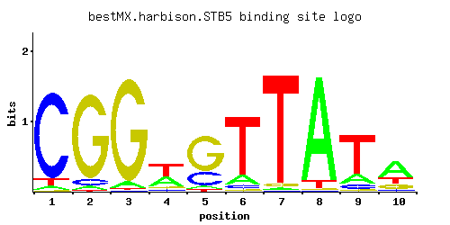

STB5
YHR178W
Transcription factor, involved in regulating multidrug resistance and oxidative stress response; forms a heterodimer with Pdr1p; contains a Zn(II)2Cys6 zinc finger domain that interacts with a pleiotropic drug resistance element in vitro
Best-performing DNA-binding model.

View and copy the recommended matrices ↘
A | 0.042 0.040 0.058 0.353 0.044 0.124 0.015 0.928 0.165 0.567 C | 0.892 0.063 0.005 0.083 0.255 0.056 0.008 0.005 0.080 0.063 G | 0.005 0.888 0.929 0.087 0.668 0.021 0.034 0.005 0.040 0.169 T | 0.061 0.010 0.008 0.477 0.033 0.800 0.944 0.063 0.714 0.201
A | 4 4 5 35 4 12 1 92 16 56 C | 89 6 0 8 25 5 0 0 8 6 G | 0 88 92 8 66 2 3 0 4 16 T | 6 1 0 47 3 80 94 6 71 20
A | -2.03 -2.08 -1.71 0.10 -1.98 -0.95 -3.06 1.06 -0.66 0.57 C | 1.60 -1.05 -3.58 -0.77 0.35 -1.17 -3.11 -3.58 -0.81 -1.05 G | -3.58 1.60 1.64 -0.73 1.31 -2.15 -1.67 -3.58 -1.50 -0.06 T | -1.66 -3.47 -3.69 0.40 -2.27 0.92 1.08 -1.63 0.80 -0.47
Alternative candidate matrices 8
Historical matrix candidates from the original ScerTF database. Expand a source to inspect its original logo, scores, and matrix values.
STB5Badis et. al.P = 3.07e-08View matrix ↘
STB5Foat et. al.P = 1.07e-10View matrix ↘
STB5_AFordyce et. al.P = 0.005462View matrix ↘
STB5_BFordyce et. al.P = 0.007027View matrix ↘
STB5_CFordyce et. al.P = 3.16e-06View matrix ↘
STB5Macisaac et. alP = 1.87e-13View matrix ↘
STB5Morozov et. al.P = 0.001282View matrix ↘
STB5Pachkov et alP = 3.96e-11View matrix ↘
Gene-level annotations and interactions.
Genes bound in ChIP-chip experiments 105 genes
YAR009C, YBL018C, YBR156C, YBR185C, YBR186W, YBR210W, YBR281C, YBR282W, YCR030C, YDL049C, YDL050C, YDL091C, YDL108W, YDL109C, YDL235C, YDR010C, YDR011W, YDR084C, YDR164C, YDR165W, YDR179C, YDR179W-A, YDR210W-D, YDR212W, YDR219C, YDR221W, YDR231C, YDR232W, YDR248C, YDR279W, YDR286C, YDR287W, YDR294C, YDR526C, YEL041W, YER138C, YER172C, YER173W, YFR007W, YGR022C, YGR093W, YGR150C, YGR218W, YGR289C, YHR028C, YHR123W, YHR155W, YHR156C, YHR157W, YHR161C, YHR162W, YHR163W, YHR178W, YHR183W, YHR184W, YIL159W, YIL160C, YJL008C, YJL193W, YJL195C, YJL216C, YJR088C, YJR089W, YJR098C, YJR099W, YJR153W, YKL014C, YKL077W, YKL177W, YKL179C, YLR011W, YLR152C, YLR199C, YLR200W, YLR269C, YLR271W, YLR354C, YLR401C, YLR402W, YMR156C, YMR272C, YMR315W, YNL126W, YNL273W, YNL274C, YOL041C, YOR074C, YOR075W, YOR086C, YOR087W, YOR088W, YOR166C, YOR214C, YOR251C, YOR252W, YOR256C, YOR257W, YOR353C, YPL061W, YPL062W, YPL113C, YPR016C, YPR073C, YPR074C, YPR076W
Genes affected by TF deletion 189 genes
YCR012W, YCR040W, YER178W, YGL199C, YGR282C, YKR012C, YML112W, YMR046W-A, YOL013W-A, YPL180W, YBR187W, YDL128W, YDL131W, YDR192C, YGL039W, YGL009C, YHR174W, YHR178W, YLR056W, YBR031W, YCR013C, YDR034C-A, YDR365W-B, YDR367W, YGL198W, YJR015W, YKR038C, YKR042W, YKR013W, YML113W, YCR097W-A, YGR122C-A, YHR142W, YHR143W-A, YHR145C, YDR158W, YDR529C, YHR025W, YIR028W, YIR034C, YJR116W, YLR340W, YLR372W, YOR351C, YPL187W, YGR214W, YHR208W, YML085C, YHR183W, YBR091C, YBR093C, YBR067C, YDR461W, YHR021C, YHR026W, YJL015C, YJR115W, YJR117W, YLR339C, YNL146W, YPR015C, YCL018W, YDR340W, YIL015W, YML055W, YNL300W, YBR012C, YBR012W-B, YDR012W, YLR287C-A, YNL058C, YOR229W, YDL133C-A, YDR230W, YHR123W, YJL121C, YLR439W, YLR410W-B, YMR202W, YNL279W, YCR018C-A, YER154W, YNL055C, YNL057W, YNL092W, YPL246C, YJR148W, YAL012W, YBR196C, YER001W, YGR161W-B, YOR390W, YDR502C, YFL018C, YLR380W, YOL144W, YOL086C, YBR265W, YDL198C, YGR192C, YGR256W, YKL178C, YFL014W, YCR088W, YLR343W, YMR083W, YOL143C, YPR027C, YBL032W, YJL158C, YKL175W, YKL177W, YCR059C, YOR239W, YPL252C, YIL114C, YJL097W, YLR040C, YLR420W, YOR085W, YOR393W, YPL031C, YCL066W, YCR053W, YKR086W, YML126C, YNL066W, YNL037C, YOR210W, YPL251W, YAR029W, YJL134W, YKL120W, YLR041W, YDL015C, YCR097W, YDL021W, YFL026W, YHR072W-A, YKL032C, YLR354C, YOL126C, YGL089C, YMR272C, YBR145W, YFL023W, YNL190W, YPR002C-A, YJR004C, YKL216W, YNR044W, YNL322C, YPL163C, YGL225W, YKR034W, YLR303W, YOR247W, YAL062W, YEL038W, YGR172C, YHR141C, YML019W, YLR459W, YOR063W, YBL107W-A, YLR302C, YNL045W, YOR248W, YPL257W-B, YGL032C, YLR421C, YMR215W, YLR334C, YMR158C-B, YOL134C, YOR375C, YOR034C, YCL009C, YDL182W, YDL184C, YJR009C, YKL164C, YCR102C, YDR487C, YDR519W, YNL198C, YDR365C, YER073W, YOR152C
Genes supported by both experiments 6 genes
YHR123W, YHR178W, YHR183W, YKL177W, YLR354C, YMR272C
Predicted TF–TF partners 8 genes
LYS14, MET28, MIG3, NHP6A, NHP6B, PDR8, RDS2, RTG3